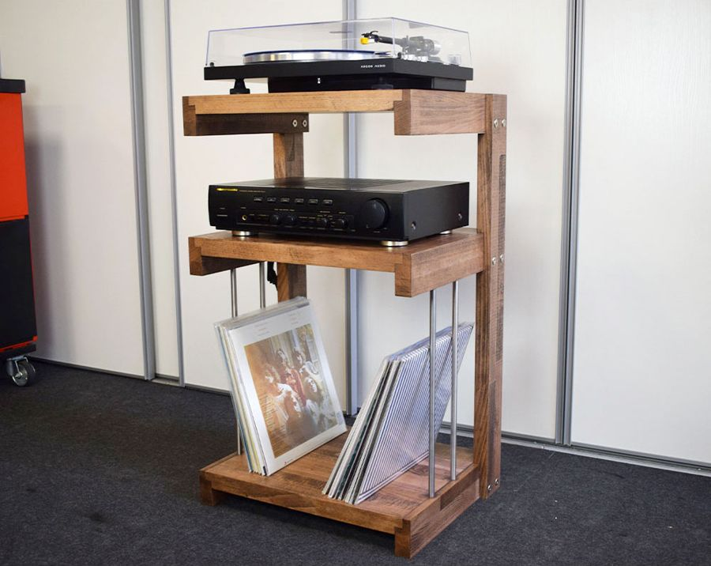
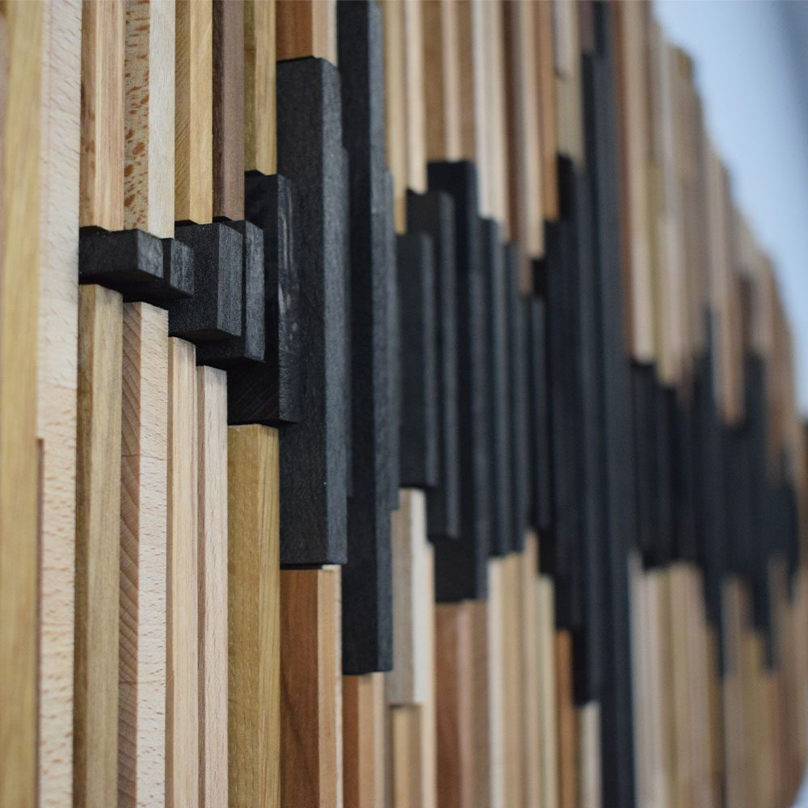
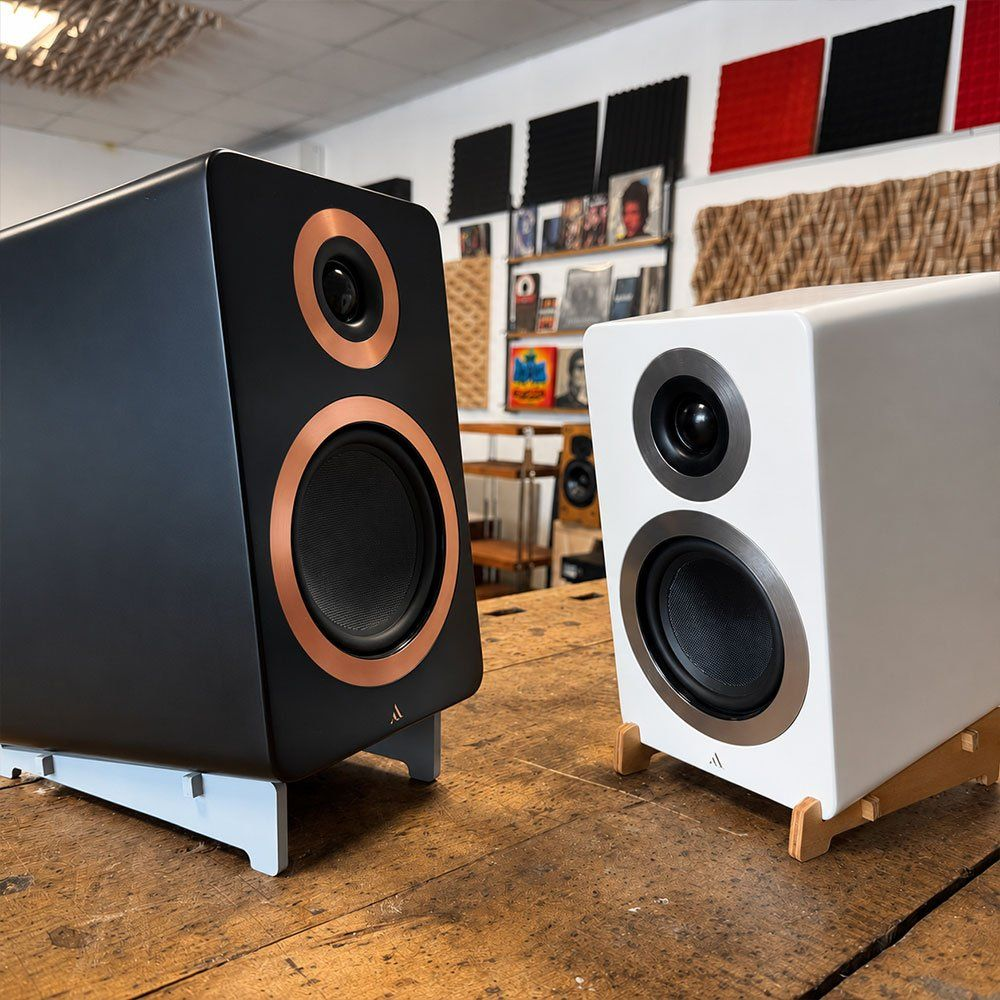
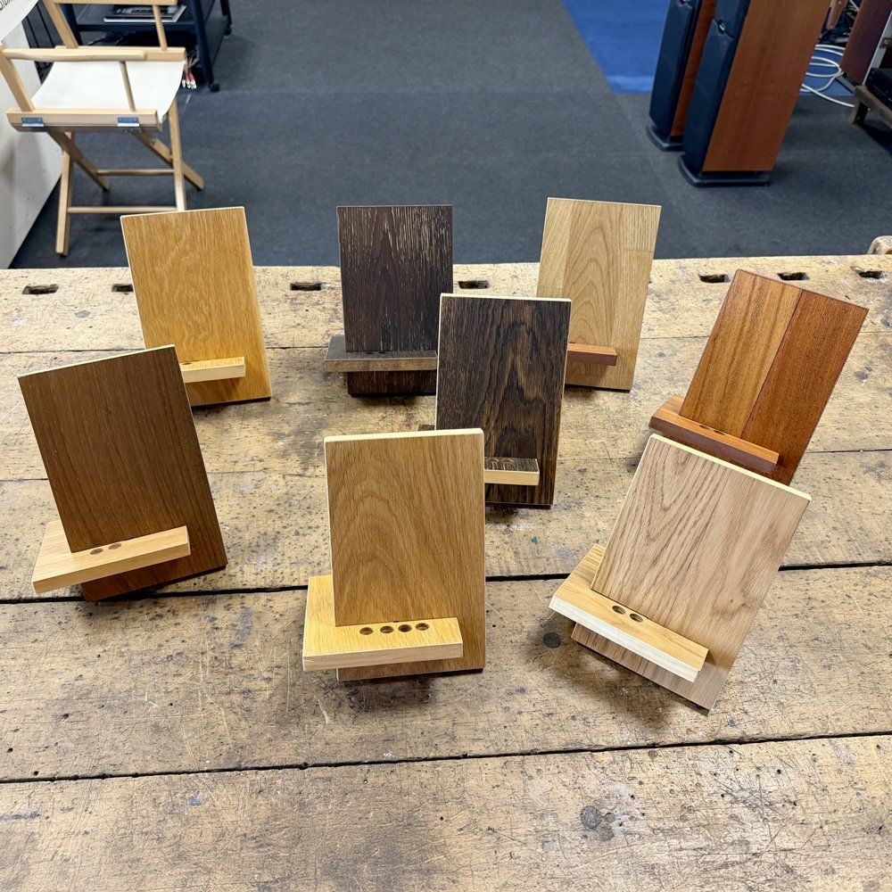

Made to measure · Handmade in Cesena
Made-to-measure hi-fi furniture, built around your system.
Furniture, stands and panels made to measure for your living room or listening room. I start from the equipment you have and the space where you want to put it. We design the piece together, then I build it by hand in my workshop in Cesena and ship it to you anywhere in Europe.
What I can build.
New pieces, designed from scratch to the dimensions and in the woods you choose. The photos show some of my work.

Hi-fi furniture and racks
For turntables, amplifiers, players and streamers, with shelves at the right height and room for cables.

Speaker stands
They bring the speakers up to ear height, sized to the speaker and the room.

Acoustic panels
To correct the room's acoustics or simply to furnish it, in the sizes your wall needs.

Vinyl record and CD storage
Storage for your collection, sized to the sleeves, the CDs and the wall you have available.

Tilting speaker supports
They tilt the speakers towards the listening position, up or down, when they sit on a low cabinet or a shelf.

Accessories
DAP stands, lifters to keep cables off the floor, wooden headphone stands with metal parts.
And more, on request.
- Headphone stands in wood, with a few metal parts.
- Anti-vibration supports for speakers, isolating the speaker from external vibrations.
- Anything else you need for your system or listening room: tell me about it and we'll design it together.
How it works.
- You write to meYou send me the list of your equipment with dimensions and, if you can, a photo of the room.
- I propose the designI reply with a drawing, suitable woods and a quote.
- I build itI cut, assemble and finish everything by hand. I send you photos as the work goes on.
- It arrives at your doorThe piece arrives fully assembled: I ship it across Europe on a pallet, carefully protected. If you prefer, you can collect it from the workshop in Cesena.
What I need for a quote.
The more details you give me, the closer the first proposal will be to the right one. If you don't have everything, that's fine: we start from what there is.
- Your equipment: width, depth, height and, if you know it, weight for each item.
- The space: the width of the wall and whether there are sockets, radiators or windows nearby.
- One or two photos of the room, even taken with your phone.
- The wood or colour you like, if you already have an idea.
- A rough budget, if you have one.
Frequently asked questions.
Do you ship across Europe?
Yes. The workshop is in Cesena and I ship across Europe.
Does the piece arrive assembled?
Yes, it arrives fully assembled and ready to use: no assembly needed. It travels on a pallet, carefully packed and protected.
Can I collect it from the workshop?
Yes, you can collect it in person in Cesena, at Via Archimede 605. Write to me first to arrange a day.
How can I pay?
You can pay by PayPal, credit card or bank transfer. If you have any questions about payment, just ask.
Can I see the furniture in person?
Yes. You'll find me in Cesena, at Via Archimede 605. If you're coming from far away, write to me first: we'll set an appointment so I'm sure to be there.
Tell me about your system.
Send me the dimensions of your equipment and your space: I'll reply with a proposal.